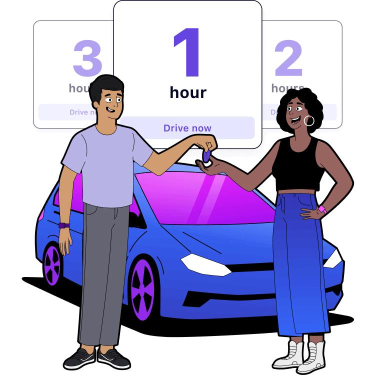
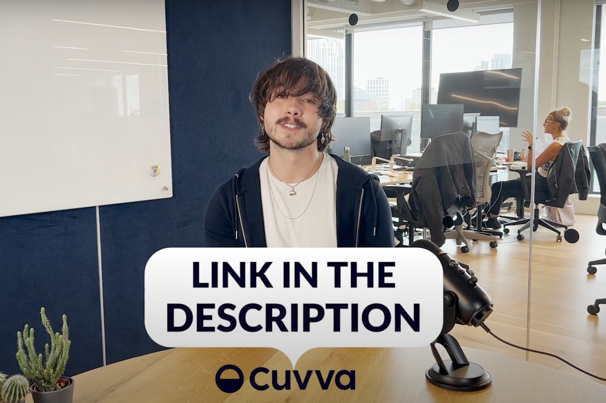

Cuvva homepage
Here's our newly redesigned homepage. I also wrote the copy for most of the other landing pages that you can find in the Cuvva nav bar.
YouTube scripts
I also write the scripts for Cuvva's YouTube 101s, which have gained 50,000+ hits since going live - check out the playlist.
'Britain's toughest driving test centres'
...and other industry guides and press releases. For this one, I delved through 1.4m tests to find the 10 hardest centres. It got a bunch of media attention.